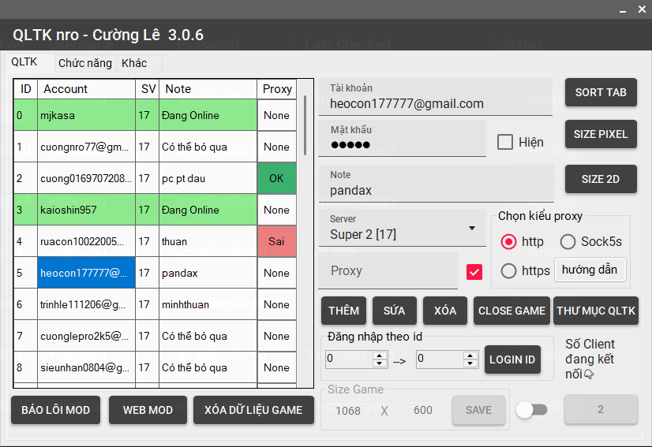
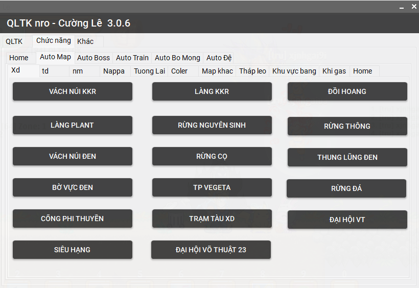
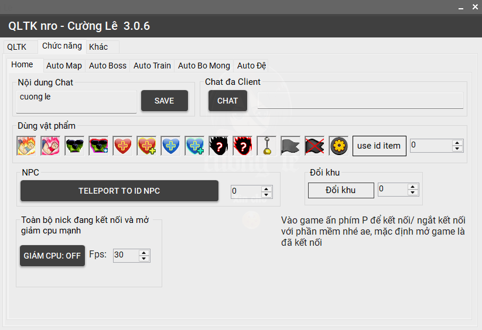
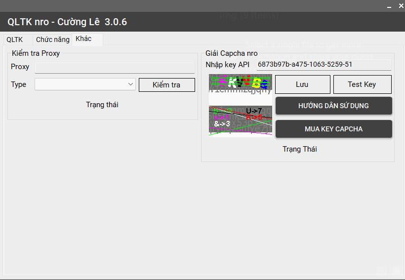

Hướng dẫn sử dụng MOD NRO Cường Lê




Lệnh Chat
- k_x: Đổi khu
- cheat_x: Thay đổi tốc độ của game
- s_x: Điều chỉnh tốc độ chạy của nhân vật
Tích hợp sẵn
- Hiển thị nhân vật trong game
- Hiển thị thông báo boss
- Tự cho đậu khi đệ kêu
- Hiển thị thời gian hồi chiêu
- Tốc độ game 2.3
Phím Tắt
- x: Menu tập hợp các chức năng cơ bản như mod koi. Nhiều quá ko tiện kể
- a: Tự động đánh
- s: Auto gim boss
- d: Đóng băng skill
- z: Tự mở/tắt cờ đen
- c: Mở Capsunbay
- h: Auto phù NRD
- j: Load map Trái
- k: Load map Giữa
- l: Load map Phải
- m: Mở tab khu
- n: Mở menu nhặt vật phẩm
- b: Mở danh sách bạn bè
- y: Mở kênh chat thế giới
- e: Auto hồi sinh bằng ngọc
- t: Bật/tắt TDLT
- i: Khóa ID hiện tại
- o: Auto vào NRO đen
- f: Dùng bông tai/ không có bông tai sẽ hợp thể lưỡng long nhất thể
- g: Gửi giao dịch
- v: Mở menu chức năng BOSS
- SHIFT + C: Bật chế độ siêu tối ưu CPU cắn CPU ít nhất có thể nhưng sẽ gây giật lag mỗi tab game được bật, hỗ trợ ae bật nhiều tab để auto buff đậu, buff hs New
- SHIFT + A: Mặc nhanh set 1
- SHIFT + Z: Mặc nhanh set 2
- SHIFT + U: Dừng một số auto như: autobomong,Xmap,auto farm Boss Nappa, Leo top Whis,...
- SHIFT + P: Thoát game ra màn hình login. Này để tui test login thôi đừng bận tâm New
- p: Kết nối với QLTK điều khiển game New
Một số chức năng nổi bật
- Auto dò boss: có dò bằng tdlt (5s load 1 khu) và không dò tdlt (10s load 1 khu)
- Hack hồi sinh Namek không cần chọn mục tiêu, có thể tự buff máu và ki khi ở 1 mình
- Auto cờ đen: khi có người trong khu mở cờ đen sẽ tự tắt
- Auto đổi mục tiêu: cứ 5s đổi 1 lần
- Auto spam trạng thái đệ tử
- Auto spam bông tai tách liên tục nhưng duy trì trạng thái tách hợp thể
- Auto leo top Whis trên hành tinh Bill, tự lên hành tinh Bill để train
- Tự đấm bản thân đến chết, hỗ trợ làm nhiệm vụ pem người bò mộng
- Hiển thị danh sách SKH nếu tài khoản có đồ KH
- Show thông tin TNM, SD, HP, KI của sư và đệ tử
- Auto bán đồ rác, trừ đồ TL, KH, sao pha lê
- Auto cất đồ SKH, Thần linh, sao pha lê
- Auto dịch chuyển bám sát boss
- Auto tự tấn công boss bằng các skill đang có như train quái
- Auto đánh toàn bộ người bật cờ trong khu (không pem boss bật cờ như Thủy Tinh, Sơn Tinh)New
- Auto up đệ kok
- Auto pem khi đệ sủa "sao sư phụ không đánh đi?"
- Auto vứt vật phẩm item, id item được ghi trong item, ví dụ: bông tai [451] New
- Thay logo trong game, background,... cho sở thích cá nhân hóa
- Hiển thị thông số up vàng, check vàng 1 hit và tổng vàng up được
- Train quái mặc đồ tự động: đang khỉ mặc set 1, hết khỉ mặc set 2 – phù hợp với set cải trang khỉ và set Kakarot (super 1,2)
- XMap đến toàn bộ map, ngục tù, khí gas,....
- Vẽ rương đồ lên tab hành trang
- Auto Bò Mộng, làm nhiệm vụ hằng ngàyNew
- Paint rương đồ vào menu hành trang – tiện check đồ mọi lúc, mọi nơi (lưu ý: không vứt đồ bậy trong menu này vì sẽ vứt đồ bên hành trang thật)
- Vẽ thêm option item như %HP, %SD trên đồ
- Chức năng Proxy vào game: hỗ trợ các kiểu kết nối (HTTP, HTTPS, SOCKS5)New
- Auto train vượt địa hình khó, tốc độ train nhanh hơn 1.3 lầnNew
- Auto bỏ chọn mục tiêu: tự động loại bỏ NPC, mob và người chơi
- Auto farm Boss Nappa: hỗ trợ cày mảnh găng TS hoặc tham gia các sự kiện farm boss liên quanNew
- Auto spam vào map có Boss Trứng MabuNew
- Tự động mua bình hút kill khi train quái ở một số map nhất định
- Thêm các chức năng mới từ bản 246 của admin NRO - Hiển thị sát thương chí mạng, và giảm sát thương ô hành trangNew
Chức Năng Phần Mềm QLTK
- Click 2 lần vào dòng tài khoản: Mở game ngay lập tức.
- Thay đổi kích thước game: Nếu kích thước nhỏ hơn 720x500, game sẽ chuyển về dạng pixel.
- Load map trên nhiều tab: Cho phép thao tác nhanh trên nhiều bản đồ.
- Chỉnh sửa nội dung auto chat: Bao gồm chat inbox, chat thường và chat thế giới.
- Sắp xếp tab game nhanh: Sắp xếp các tab game dễ dàng và nhanh chóng.
- Một số chức năng game: Nhiều lắm nên tự mở QLTK xok ấn mục chức năng rồi xem
- Thông báo khi có phiên bản mới: QLTK tự động thông báo khi có bản cập nhật mới.
- Lưu ý: Nếu phần mềm báo chưa có framework 8.0 thì ấn vào file có tên: "Tải framework 8.0.bat"
Tải MOD NRO
Tải Bản MOD Đang tải...Lưu ý: nếu không vào được game thì ấn "Xóa dữ liệu" trong phần mềm QLTK nhé